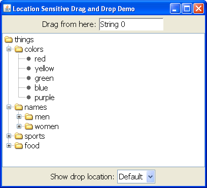

Lección: Arrastrar y Soltar y Transferencia de Datos
Sección: Soltado Sensible a la Ubicación
Demostración - LocationSensitiveDemo
La demostración siguiente, LocationSensitiveDemo, muestra un JTree que ha sido
configurado para soportar la suelta de datos en cualquier nodo excepto para uno llamado "names"
( y sus descendientes). Use el campo de texto en lo alto del cuadro como la fuente de arrastre (incrementará
automáticamente el número de la cadena cada vez que usted arrastre desde ahí).
Un cuadro combinado debajo del árbol le permite alternar el comportamiento para mostrar la ubicación de colocación. El comportamiento por defecto de Swing es mostrar la ubicación de colocación sólo cuando el área puede aceptar la suelta de datos. Puede sobreescribir este comportamiento para que siempre muestre la ubicación de colocación (incluso si el área no puede aceptar la suelta de datos) o que nunca muestre la ubicación de colocación (incluso si el área puede aceptar la suelta de datos).

Intente esto:
-
Pulse el botón Lanzar para ejecutar
LocationSensitiveDemousando Java™ Web Start ( descargue el KDJ 7 o posterior ). Alternativamente, para compilar y ejecutar el ejemplo usted mismo, consulte el índice de ejemplos.
- Inicie un arrastre presionando en lo alto de "String 0" en el campo de texto y mueva el ratón una pequeña distancia. Arrastre dentro del árbol y muévase hacia abajo. Al pasar el ratón sobre la mayoría de los nodos, la aceptabilidad de arrastre se indica tanto por el cursor del ratón como por el nodo resaltado. Suelte el texto sobre el nodo "colors". El nuevo item se convierte en un hijo de ese nodo y hermano de los colores enumerados.
- Arrastre "String 1" desde el campo de texto dentro del árbol. Intente arrastrala sobre el nodo "names". A medida que arrastra sobre ese nodo o sus hijos, Swing no proporcionará ningún comentario sobre la ubicación de la colocación y no aceptará los datos.
- Cambie el cuadro combinado "Show drop location" a "Always".
- Repita los pasos 1 y 2. La ubicación de colocación ahora se muestra para el nodo "names", pero no puede soltar los datos en esa área.
- Cambie el cuadro combinado "Show drop location" a "Never".
- Repita los pasos 1 y 2. La ubicación de colocación no se mostrará en ninguna parte del árbol, aunque puede aún soltar datos dentro de los nodos, que no sea "names".
El método canImport para
LocationSensitiveDemo
se ve como esto:
public boolean canImport(TransferHandler.TransferSupport info) {
// para la demostración, solo soportaremos soltados (no pegados desde el portapapeles)
if (!info.isDrop()) {
return false;
}
String item = (String)indicateCombo.getSelectedItem();
if (item.equals("Always")) {
info.setShowDropLocation(true);
} else if (item.equals("Never")) {
info.setShowDropLocation(false);
}
// sólo importamos Strings
if (!info.isDataFlavorSupported(DataFlavor.stringFlavor)) {
return false;
}
// obtenemos la ubicación de colocación
JTree.DropLocation dl = (JTree.DropLocation)info.getDropLocation();
TreePath path = dl.getPath();
// no soportamos rutas no válidas o descendientes de la carpeta names
if (path == null || namesPath.isDescendant(path)) {
return false;
}
return true;
}
El primer trozo de código mostrado en negrita modifica el mecanismo de retroalimentación de la ubicación de colocación. Si es "Always", entonces se muestra siempre la ubicación de colocación. Si es "Never", nunca se muestra la ubicación de colocación. De lo contrario, se aplica el comportamiento por defecto.
El segundo trozo de código mostrado en negrita contiene la lógica que determina si el árbol aceptará los datos. Si la ruta no es una ruta válida o si ésta no es la ruta names (o sus descendientes) devolverá falso y la importación no será aceptada.